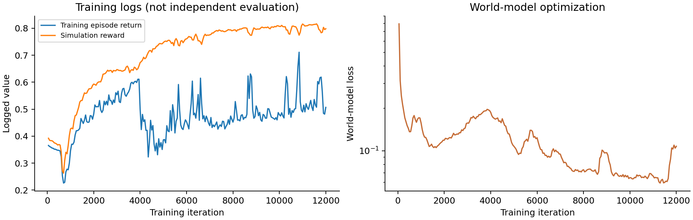
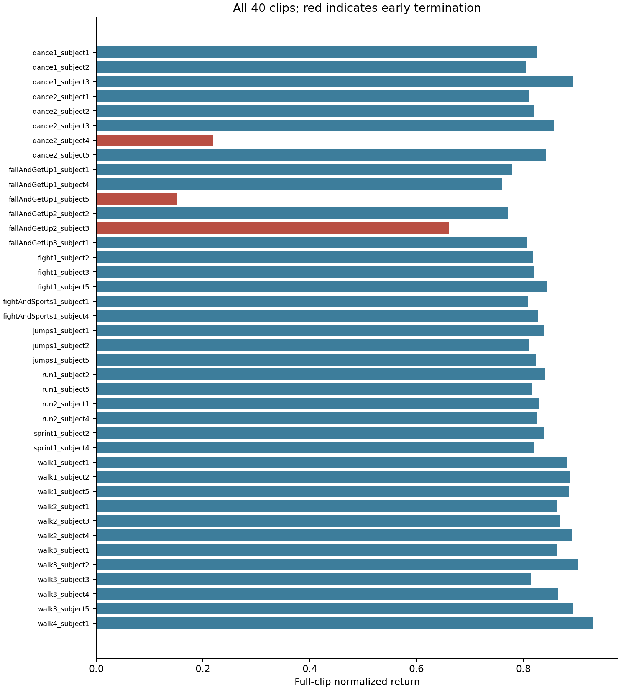

历史实验快照 · 保留原有数值、失败项与固定分母。视频为完整时长的网页播放副本；原始文件哈希描述本地原件。整体目标尚未完成。
单张 H100 的社区实现基线，seed 0，40 条动作，12000 次迭代。
未达到约 0.82 且零失败的参考目标。这是 seed 0 的单次结果，归一化回报不是成功率。提前失败动作：dance2_subject4, fallAndGetUp1_subject5, fallAndGetUp2_subject3。
这是 Motphys/Uni-SuperMimic 的社区基线。其单帧本体观测为 99 维，论文表格为 93 维；依赖锁定 UniLab 1.5.1。结果不代表原论文全部实验的严格复现。0.82 为参考目标，不能用训练日志替代独立评估。
社区 README 的参考结果使用 UniLab 1.5.0，本次遵循所固定源码提交的依赖锁，实际为 1.5.1。版本差异是待查因素；本轮没有对照实验，不能据此认定它造成分差。
有限验收先执行 0→5 次迭代，退出后加载完整检查点并执行 5→8。世界模型、策略和 critic 的参数及优化器均通过实际更新检查；恢复时模型状态和优化器计数一致。回放缓冲区重新预热，因此不声称 RNG 与回放逐位连续。正式基线从独立的新目录开始。
正式训练保留上游 4096 环境、BF16、32 步想象时域和网络宽度。训练实现 commit：faf7818e8abac3ec6abb8f00e6e904d3577f800b。数据 revision：ce1572906efe6157840e8474d5a0d7aa87481e74。

评估对象仍是训练使用的同一 40 条动作库；独立指单独进程和固定评估设置，不是未见动作的泛化测试。每条动作从第零帧开始，确定性策略，无观测/动作噪声，无域随机化，摩擦系数 1.0。提前失败仍按完整重采样动作长度减一乘以 0.1 归一化。宏平均与帧数加权平均分别报告，全部失败保留。

| 动作 | 归一化回报 | 执行步数 | 完整步数 | 分母 | 失败 |
|---|---|---|---|---|---|
| dance1_subject1 | 0.824819 | 6573 | 6573 | 657.3 | 否 |
| dance1_subject2 | 0.804702 | 6573 | 6573 | 657.3 | 否 |
| dance1_subject3 | 0.892409 | 6573 | 6573 | 657.3 | 否 |
| dance2_subject1 | 0.811404 | 11283 | 11283 | 1128.3 | 否 |
| dance2_subject2 | 0.820519 | 11283 | 11283 | 1128.3 | 否 |
| dance2_subject3 | 0.857185 | 11283 | 11283 | 1128.3 | 否 |
| dance2_subject4 | 0.218860 | 3047 | 11283 | 1128.3 | 是 |
| dance2_subject5 | 0.843252 | 11283 | 11283 | 1128.3 | 否 |
| fallAndGetUp1_subject1 | 0.779315 | 8410 | 8410 | 841.0 | 否 |
| fallAndGetUp1_subject4 | 0.760708 | 8410 | 8410 | 841.0 | 否 |
| fallAndGetUp1_subject5 | 0.152698 | 1709 | 8410 | 841.0 | 是 |
| fallAndGetUp2_subject2 | 0.771893 | 8195 | 8195 | 819.5 | 否 |
| fallAndGetUp2_subject3 | 0.660590 | 7051 | 8195 | 819.5 | 是 |
| fallAndGetUp3_subject1 | 0.807134 | 5108 | 5108 | 510.8 | 否 |
| fight1_subject2 | 0.817960 | 12243 | 12243 | 1224.3 | 否 |
| fight1_subject3 | 0.819598 | 12243 | 12243 | 1224.3 | 否 |
| fight1_subject5 | 0.844361 | 12243 | 12243 | 1224.3 | 否 |
| fightAndSports1_subject1 | 0.808879 | 12256 | 12256 | 1225.6 | 否 |
| fightAndSports1_subject4 | 0.827007 | 12256 | 12256 | 1225.6 | 否 |
| jumps1_subject1 | 0.838036 | 12221 | 12221 | 1222.1 | 否 |
| jumps1_subject2 | 0.810553 | 12221 | 12221 | 1222.1 | 否 |
| jumps1_subject5 | 0.822841 | 12221 | 12221 | 1222.1 | 否 |
| run1_subject2 | 0.840782 | 11890 | 11890 | 1189.0 | 否 |
| run1_subject5 | 0.816345 | 11890 | 11890 | 1189.0 | 否 |
| run2_subject1 | 0.830509 | 12240 | 12240 | 1224.0 | 否 |
| run2_subject4 | 0.826269 | 12240 | 12240 | 1224.0 | 否 |
| sprint1_subject2 | 0.838010 | 13655 | 13655 | 1365.5 | 否 |
| sprint1_subject4 | 0.820590 | 13655 | 13655 | 1365.5 | 否 |
| walk1_subject1 | 0.881643 | 13065 | 13065 | 1306.5 | 否 |
| walk1_subject2 | 0.887363 | 13065 | 13065 | 1306.5 | 否 |
| walk1_subject5 | 0.885537 | 13065 | 13065 | 1306.5 | 否 |
| walk2_subject1 | 0.862299 | 11908 | 11908 | 1190.8 | 否 |
| walk2_subject3 | 0.869686 | 11908 | 11908 | 1190.8 | 否 |
| walk2_subject4 | 0.890539 | 11908 | 11908 | 1190.8 | 否 |
| walk3_subject1 | 0.863069 | 12330 | 12330 | 1233.0 | 否 |
| walk3_subject2 | 0.902254 | 12330 | 12330 | 1233.0 | 否 |
| walk3_subject3 | 0.813997 | 12330 | 12330 | 1233.0 | 否 |
| walk3_subject4 | 0.864453 | 12330 | 12330 | 1233.0 | 否 |
| walk3_subject5 | 0.893326 | 12330 | 12330 | 1233.0 | 否 |
| walk4_subject1 | 0.931150 | 8195 | 8195 | 819.5 | 否 |
| 动作 | 终止时刻 / s | 完整时长 / s |
|---|---|---|
| dance2_subject4 | 60.94 | 225.66 |
| fallAndGetUp1_subject5 | 34.18 | 168.20 |
| fallAndGetUp2_subject3 | 141.02 | 163.90 |
时长按实际控制步长 0.02s 换算。终止来自上游高度或姿态偏差判据；本轮未记录逐分支触发原因，不能把每条失败归因于某一个判据。没有删除失败样本，也没有改用存活长度缩小归一化分母。
| 阶段 | 子进程耗时 / s | 采样主机峰值 / GiB | 采样显存峰值 / GiB |
|---|---|---|---|
| smoke | 414.2 | 5.25 | 3.87 |
| resume | 303.1 | 5.05 | 3.86 |
| training | 5891.7 | 8.05 | 17.36 |
| evaluation | 354.0 | 5.63 | 2.74 |
| video-0 | 126.4 | 6.30 | 2.65 |
| video-1 | 126.4 | 6.31 | 2.65 |
| video-2 | 151.7 | 6.32 | 2.65 |
资源每 5 秒采样，峰值不是连续测量；主机内存含 cgroup 文件缓存。PyTorch 分配器峰值：已分配 12.63GiB，已保留 15.02GiB，不包含 Warp 等非 PyTorch 分配。首个模型更新 60.85s，首个策略更新 179.72s；启用编译时这些数值包含编译及更新，不能当作纯编译时间。排队、镜像和系统依赖准备不计入这些子进程时长。平台终态与 CCI/DNAT 释放证据见本地 execution.json。
固定展示跳跃与起身（各 15 秒），再展示首个失败动作 dance2_subject4 的终止前片段（10 秒）。策略从第零帧滚动，再截取失败附近片段；没有在截取起点重新初始化。实色机器人为策略，蓝色半透明机器人为参考。三段视频共 1000 帧已全部解码，视频仅用于观察运动，不能替代数值评估。
本轮正式 GPU 作业于 2026-10-25 02:46:31 +08 显示成功。文件回收完成后，复用的 CPU CCI 已停止、0/1、实例列表为空；DNAT 已解绑，原启动配置已逐字恢复。自动停止 helper 仍不可用，本轮使用值守和控制台停止。云端结果摘要生成早于资源释放，其中的 false 保留原值；最终状态另存于 最终资源核验记录，不改写冻结结果。
资源释放已在本地核验；控制台截图未纳入公开版。
资源释放已在本地核验；控制台截图未纳入公开版。
资源释放已在本地核验；控制台截图未纳入公开版。
完整评估 JSON · 逐文件哈希清单 · 下载与逐文件校验 · 视频解码验收 · 检查点验收 · 平台执行记录 · 复现说明
评估检查点 SHA256：8b3b36ed67a39da526b2de3717291d2a9f8dba570071a80b052d2eb3c8bf3305